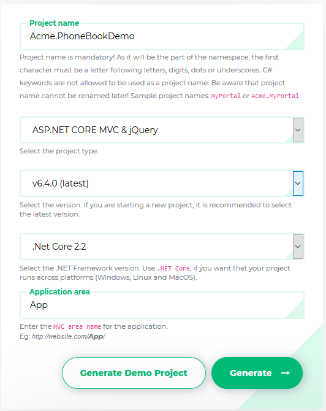

This document is aimed to create and run an ASP.NET Zero based project in just 5 minutes. It's assumed that you already purchased and created your ASP.NET Zero account.
Login to this web site with your user name and password. Then you will see Download link on the main menu.
Go to the download page. You will see a form as shown below:

Select ASP.NET Core & jQuery as Project Type and fill other required fields. Click to the Download button, your project will be ready in one minute. Open the solution in Visual Studio 2017+:
Right click the .Web.Mvc project and select "Set as StartUp project": Then build the solution. It make take longer time in first build since all nuget packages will be restored.
Open appsettings.json in .Web.Mvc project and change the Default connection string if you want:
"ConnectionStrings": {
"Default": "Server=localhost; Database=PhoneBookDb; Trusted_Connection=True;"
}
We have two options to create and migrate database to the latest version.
AspNet Zero solution includes a .Migrator (like Acme.PhoneBook.Migrator) project in the solution. You can run this tool for database migrations on development and production (see development guide for more information).
You can also use Entity Framework's built-in command line tools for migrations.
Open Windows Command Prompt, locate to the folder containing the .EntityFramework project and run the "dotnet ef database update" command as shown below:

This command will create your database and fill initial data. You can open SQL Server Management Studio to check if database is created:

You can use EF console commands for development and Migrator.exe for production. But notice that; Migrator.exe supports running migrations in multiple databases at once, which can be useful in development/production for multi tenant applications.
ASP.NET Zero supports multi-tenant and single-tenant applications. Multi-tenancy is enabled by default. If you don't have idea about multi-tenancy or don't want to create a multi-tenant application, you can disable it. If you want a multi-tenant application, leave it enabled in ProjectNameCoreModule class in .Core project:
//Enable this line to create a multi-tenant application.
Configuration.MultiTenancy.IsEnabled = true;
All ready.. just run your solution. It will open home page of your web site. You can click login link at top right corner to login to the application:

If multi-tenancy is enabled, you will see the current tenant and a change link. If so, click to Change and enter default as tenant name. If you leave it empty, you login as the host admin user. Then enter admin as user name and 123qwe as password. You should change password at first login. After login to the application, you will see the sample dashboard screen:

Remember to adjust your time zone in Settings page in order to see date and times in your local time. Default time zone is UTC. See timing documentation to learn more about timing infrastructure.
Your solution is up and working. See development guide document for more information.